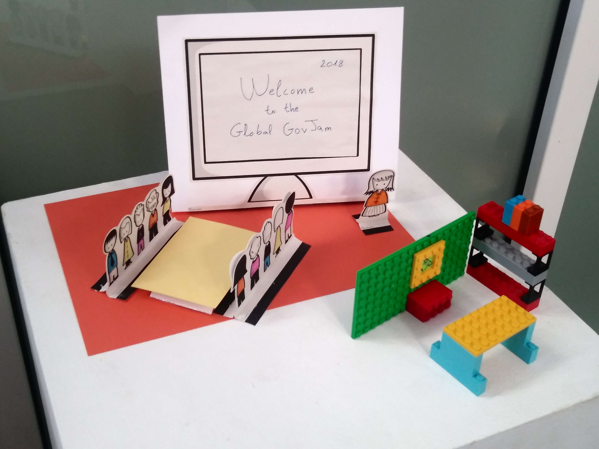

Tipos de prototipos
Según el material disponible
Prototipos de papel:

Representamos nuestra idea mediante un storyboard, el dibujo de un folleto, de las pantallas de una aplicación web, de un cartel, etc. También utilizamos la herramienta SCENES para construir escenarios de papel.
VIDEO RECURSO
“Scenes” es una herramienta muy útil para realizar storyboards y construir escenarios.
Prototipos construidos con cartón:
Representamos el espacio donde va a transcurrir la acción: la recepción de un centro educativo, un espacio en el aula…; hacemos mobiliario, accesorios, representamos productos para construir un atrezzo, por ejemplo.
Prototipos interactivos realizados con aplicaciones:
Hay aplicaciones que sirven para prototipar productos digitales como una aplicación móvil o una web. Se pueden utilizar en combinación con dibujos en papel que se fotografían o dIbujando las pantallas y sus botones directamente en la web. Para que veáis como funciona os facilito estos videos tutoriales de POP MARVEL:
VIDEO RECURSO
Con la aplicación POP MARVEL puedes prototipar una aplicación móvil o una web diseñando sus pantallas y su interacción, de forma que el usuario pueda probarla.
Esta aplicación la he utilizado alguna vez para testear servicios y aplicaciones móviles directamente en la calle y os puedo decir que genera interés en las personas con las que quieres testear la idea y transmite mucho realismo.
A pesar de que el prototipo es fácil y rápido de hacer, se muestra, durante el testeo, en el propio dispositivo móvil; de manera que los usuarios y usuarias potenciales interactúan con la aplicación en su soporte real.
Prototipos construidos con piezas de construcción y personajes
En ocasiones, cuando queremos representar un espacio y las relaciones que se establecen en él entre diferentes actores, la forma más rápida (y divertida) es construir un escenario con piezas de construcción y personajes.
Los usuarios, al testar el prototipo podrán mover los personajes, construir historias, hacerse pasar por uno de los personajes y contar lo que haría en determinada situación, mientras se mueve por el escenario y conoce el contexto, etc.
Como curiosidad y para que indagueis, si os puede interesar; Lego tiene una división de producto dedicada a talleres, trabajo de equipo, realización de prototipos, etc. Se llama Lego Serius Play.
Es una buena herramienta para trabajar en equipo. Las dinámicas con Lego Serius Play nos pueden ayudar, por ejemplo, a crear o fortalecer un equipo. Se pueden llevar a cabo dinámicas que ayudan a encontrar áreas de mejora como grupo, a debatir sobre liderazgo y a conseguir consenso, o un decálogo de comportamiento, por ejemplo.
Las piezas de construcción se convierten en un medio de expresión del individuo y del equipo.
Trabajar con piezas de construcción, en general, le resulta a las personas bastante intuitivo, ninguna construcción sale mal, no requiere gran maestría, por eso tiene mucha aceptación en este tipo de actividades.
En Lego Serius Play hay una serie de packs, en especial uno de iniciación, que sirven para realizar estas dinámicas.
Aunque podemos utilizar sólo piezas de construcción para hacer un prototipo, consideramos que es más interesante mezclarlas con otros materiales para hacer prototipos híbridos, como los que vamos a ver a continuación.
No obstante, no es necesario utilizar Lego Serius Play. Por mi experiencia en talleres os diré que con un pack Classic de Lego y uno de Duplo es suficiente para prototipar en un taller de unas 20 personas.
Prototipos construidos con diferentes materiales:
En ocasiones tenemos que utilizar lo que tenemos a mano: un poco de plastilina, una caja de cartón, material reciclado, etc.

Un escenario con piezas de construcción, personajes con plastilina y diálogos escritos con notas adhesivas puede ser una alternativa muy completa para testear nuestra idea.
Un escenario con piezas de cartón, plastilina y papel puede resultar muy convincente.
El prototipo de un producto hecho con papel, cajas de cartón recicladas y cartulina de colores es más que suficiente para testearlo con las personas usuarias.

Prototipos de alta fidelidad
Si realizamos un prototipo de alta fidelidad en las últimas fases del proceso de diseño, después de haber realizado varios de baja fidelidad y haber obtenido el feedback de los usuarios, podremos utilizar otros materiales y procesos:
- ABS o PLA para imprimir con una impresora 3D.
- Kits de Arduino o similar para conseguir prototipos funcionales.
- Mecanismos, motores eléctricos o piezas de transmisión, para prototipos funcionales.
- Planchas de plástico, de madera de balsa, de DM o de cartón nido de abeja, nos servirán para construir estructuras más resistentes y duraderas; y en ocasiones, si conseguimos cortarlos o mecanizarse, nos podrán servir para hacer productos finales.
Si no tenemos estos materiales o la posibilidad de experimentar estos procesos, existen espacios makers, públicos y privados, con los que colaborar en la creación de las piezas o productos definitivos.
Prototipos según lo que queremos testar:
Si queremos testar la interacción con un espacio:
Ejemplos: Queremos testar el nuevo espacio de la biblioteca, del comedor, del aula, la nueva distribución del taller de tecnología, del taller de plástica, del hall de entrada, etc.
- ESCENARIO O WALKTHROUGH:
Nos sirve para representar el espacio en plano.
Se puede transportar fácilmente si lo construimos sobre una base de cartón, por ejemplo.
El usuario puede “visitar” el espacio y ofrecer alternativas.
Podemos escribir diálogos que simulan la interacción entre los actores.
El usuario con el que testamos la distribución y las actividades del espacio puede modificar los diálogos o añadir nuevos diálogos.
- ESCENARIO A ESCALA REAL
Nos sirve para modificar el espacio que estamos diseñando o re-diseñando en poco tiempo y transmitir nuestras ideas.
Nos posibilita testar la forma en la que se relacionan las personas usuarias con la nueva distribución, señalética, etc.
Modificamos el espacio con cajas de cartón, movemos muebles, creamos nuevos espacios con cinta aislante o cinta de carrocero en el suelo; completamos el prototipo con carteles u otros elementos que nos hacen comprender mejor los cambios.
Si queremos testar un proceso:
Ejemplos: Queremos testar un protocolo de bienvenida, el proceso de admisión del centro educativo, las reuniones de departamento, la coordinación entre docentes, un proceso de mentorización, un taller, una actividad, etc.
- STORYBOARD:
Nos sirve para mostrar visualmente la historia de nuestra idea.
Podemos dibujar las viñetas, hacer collage con material de Scenes, por ejemplo, o utilizar notas adhesivas.
Podemos mostrar de una forma sencilla el viaje de la persona usuaria través del proceso que estamos desarrollando.
Podemos mostrar nuestra idea mostrando mediante “un antes y un después” las mejoras que hemos integrado o como hemos evolucionado el proceso.
Al testarlo podemos facilitar notas adhesivas a nuestros usuarios potenciales para que modifiquen las escenas que consideren mejorables. Pueden realizar un dibujo o escribir una sugerencia o recomendación.
- BLUEPRINT:
Mediante este mapa, que recoge: las fases del proceso, los pasos del usuario, los puntos de contacto, las interacciones con personas y los procesos de apoyo necesarios para poder llevar a cabo el servicio o la actividad; podemos conseguir testar el proceso de forma que el usuario potencial visualiza los pasos del servicio, actividad o experiencia y señala: dudas, áreas de mejora, soluciones que le gustan...
Si el Journey Map o mapa del viaje del usuario es una herramienta de síntesis de la investigación, el BLUEPRINT es una herramienta que nos ayuda a definir la idea en detalle durante la fase de desarrollo y también nos puede ayudar a testear con la persona usuaria cada paso del proceso.
Además nos sirve para testar con los responsables del centro, por ejemplo, los procesos de apoyo necesarios para llevar nuestra idea a la realidad: reuniones, gestión de citas, actualización de la web, etc.
- ROLE PLAYING:
Mediante una representación teatral mostramos el proceso. En ocasiones no es imprescindible tener material para hacer un prototipo. Los integrantes del equipo pueden, haciendo de actores, representar una escena o una historia para mostrar un servicio, una reflexión, etc.
Cada uno de los o las integrantes del equipo pueden representar un rol. Podemos observar las interacciones entre diferentes actores del proceso.
Estos prototipos suelen funcionar muy bien y hacen que el equipo aumente en confianza. Las personas se desinhiben y se ponen en la piel del distintos tipos de usuarios.
Por ejemplo: Si estamos testando el proceso del banco de libros del centro educativo, mostraremos, mediante escenas teatrales los diferentes pasos que da el usuario: cuando le informan, cuando solicita, cuando dona libros, cuando recibe los libros, cuando los llevan sus hijos o hijas al colegio, etc.
Los usuarios al testar el prototipo podrán escribir notas con áreas de mejora que hayan detectado, con soluciones que les hayan gustado, etc.
VÍDEO: Podemos grabar el ROLE PLAYING para mostrarlo siempre que queramos, llevarlo en nuestro móvil o enviarlo y testearlo en remoto.
Al grabar la actuación y visionarla antes del testeo podemos ir haciendo mejoras, repitiendo la actuación para hacer un prototipo más completo.
Si queremos testar la interacción con un producto:
- MAQUETA DE VOLUMEN:
Nos sirve para comprobar dimensiones, ergonomía, código de colores, áreas de mejora en su interacción, etc.
Podemos hacerla de plastilina, que es fácilmente moldeable, para que la persona usuaria pueda probarlo.
Si, por ejemplo, estamos diseñando un producto que podemos prototipar a tamaño real, la plastilina es ideal, ya que nos ayuda pasar de las dos dimensiones (el dibujo) a las tres dimensiones (el prototipo) de una forma directa, en la misma aula donde trabajamos habitualmente.
La persona usuaria, al testarla, podrá cogerla, tocarla, simular su interacción: podrá cortar, poner en marcha, apagar; y observar si es cómodo, si se entiende, si es grande, etc.
En el caso de prototipar un producto que es muy grande, como una mesa, o un mostrador, por ejemplo; podemos hacer una maqueta a escala para transmitir su acabado, posibilidades cromáticas, etc. y una muy sencilla, a escala real (con cartón, papel, sobre una mesa real o unos tableros, para que el usuario pueda probarla y asegurarnos que se adapta a sus medidas, al espacio disponible, etc.
NOTA: Recuerda que si estamos prototipando un producto digital podemos prototipar la interacción del usuario mediante “pantallas de papel” o aplicaciones como POP MARVEL.

Design Thinking en educación por Elena Bernia bajo licencia Creative Commons Reconocimiento-NoComercial-CompartirIgual 4.0 Internacional License.